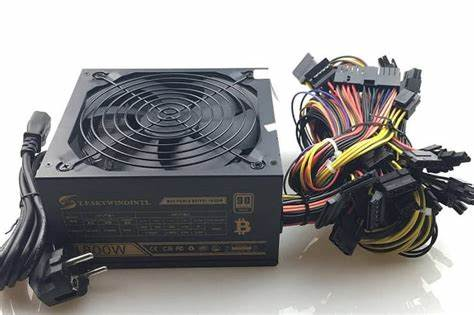

¿Qué la Fuente de Poder?
Una fuente de poder, también conocido en el ámbito de la informática como “fuente de alimentación”, es un componente ubicado dentro del gabinete de tu PC, muy próximo a donde está ubicado tu CPU. Este dispositivo se utiliza para suministrar la energía eléctrica para que el computador funcione, pues como todos sabemos, sin energía no podría siquiera iniciarse.
